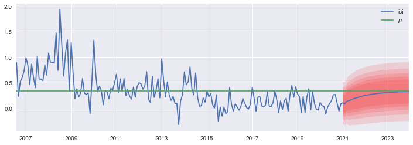

Estimación de un modelo ARMA de inflación para Costa Rica
Contents
3.1. Estimación de un modelo ARMA de inflación para Costa Rica¶
Nota Para ejecutar este cuaderno se requiere el paquete bccr. Si no lo tiene, ejecute la siguiente celda
try:
import bccr
except ImportError:
print('Module bccr missing. Installing it now')
!pip install bccr
Descarga de datos¶
from bccr import SW
import matplotlib.pyplot as plt
plt.style.use('seaborn')
import numpy as np
import pandas as pd
from statsmodels.tsa.arima.model import ARIMA
from statsmodels.graphics.tsaplots import plot_acf, plot_pacf
SW.buscar(todos='inflación subyacente')
| DESCRIPCION | descripcion | Unidad | Medida | periodo | |
|---|---|---|---|---|---|
| codigo | |||||
| 1264 | Node('/BCCR/Índices de Precios/Indice Subyacente de inflación (ISI), (Julio 2006 = 100) [1264]') | (ISI) INDICE SUBYACENTE DE INFLACION (BASE JULIO 2006=100) | Nivel | NO DEFINIDO | Mensual |
| 1267 | Node('/BCCR/Índices de Precios/Indice Subyacente de inflación (ISI), (Julio 2006 = 100) [1267]') | INDICE SUBYACENTE DE INFLACION VARIACION INTERANUAL | Porcentaje Variación Interanual | NO DEFINIDO | Mensual |
| 4160 | Node('/BCCR/Índices de Precios/Indice Subyacente de inflación (ISI), (Julio 2006 = 100) [1264]/Bienes [4160]') | Bienes | Nivel | Unidades | Mensual |
| 27118 | Node('/BCCR/Índices de Precios/Indice Subyacente de inflación (ISI), (Julio 2006 = 100) [1267]/Bienes [27118]') | Bienes | Porcentaje Variación Interanual | NO DEFINIDO | Mensual |
| 4181 | Node('/BCCR/Índices de Precios/Indice Subyacente de inflación (ISI), (Julio 2006 = 100) [1264]/Servicios [4181]') | Servicios | Nivel | Unidades | Mensual |
| 27119 | Node('/BCCR/Índices de Precios/Indice Subyacente de inflación (ISI), (Julio 2006 = 100) [1267]/Servicios [27119]') | Servicios | Porcentaje Variación Interanual | NO DEFINIDO | Mensual |
| 24171 | Node('/BCCR/Índices de Precios/Inflación subyacente reponderada por persistencia [24171]') | Inflación subyacente reponderada por persistencia | Nivel | Unidades | Mensual |
| 24172 | Node('/BCCR/Índices de Precios/Inflación subyacente reponderada por persistencia [24172]') | Inflación subyacente reponderada por persistencia | Porcentaje Variación Interanual | Unidades | Mensual |
| 24174 | Node('/BCCR/Índices de Precios/Inflación subyacente reponderada por volatilidad [24174]') | Inflación subyacente reponderada por volatilidad | Nivel | Unidades | Mensual |
| 24175 | Node('/BCCR/Índices de Precios/Inflación subyacente reponderada por volatilidad [24175]') | Inflación subyacente reponderada por volatilidad | Porcentaje Variación Interanual | Unidades | Mensual |
| 25724 | Node('/BCCR/Índices de Precios/IEV [25724]') | Indicadores de Inflación Subyacente, (Junio 2015 = 100) | Nivel | NO DEFINIDO | Mensual |
| 25726 | Node('/BCCR/Índices de Precios/IEV [25726]') | Indicadores de Inflación Subyacente, (Junio 2015 = 100) | Porcentaje Variación Interanual | NO DEFINIDO | Mensual |
| 25725 | Node('/BCCR/Índices de Precios/IEV [25725]') | Indicadores de Inflación Subyacente, (Junio 2015 = 100) | Porcentaje Variación Mensual | NO DEFINIDO | Mensual |
isi = SW(isi=25725).dropna()
isi
| isi | |
|---|---|
| fecha | |
| 2006-08 | 0.895052 |
| 2006-09 | 0.236138 |
| 2006-10 | 0.524076 |
| 2006-11 | 0.601677 |
| 2006-12 | 0.730769 |
| ... | ... |
| 2020-08 | 0.266575 |
| 2020-09 | 0.270565 |
| 2020-10 | 0.099647 |
| 2020-11 | -0.053413 |
| 2020-12 | 0.088659 |
173 rows × 1 columns
Graficar la serie original y estudiar su autocorrelograma¶
fig, axs = plt.subplot_mosaic(
"""
AA
BC
""", figsize=[10,5], tight_layout=True)#, sharey='row')
isi.plot(ax=axs['A'], title='Inflación subyacente, mensual', legend=None)
plot_acf(isi, ax=axs['B'], title='Autocorrelación')
plot_pacf(isi, ax=axs['C'], title='Autocorrelación parcial');
axs['B'].set_xticks(range(0,30,6))
axs['C'].set_xticks(range(0,30,6))
axs['C'].sharey(axs['B'])
fig.savefig('ISI-AR3.pdf', bbox_inches='tight')

Estimar un modelo AR(3)¶
res = ARIMA(isi, order=[3,0,0]).fit()
res.summary()
| Dep. Variable: | isi | No. Observations: | 173 |
|---|---|---|---|
| Model: | ARIMA(3, 0, 0) | Log Likelihood | -4.734 |
| Date: | Sun, 24 Apr 2022 | AIC | 19.468 |
| Time: | 16:23:33 | BIC | 35.234 |
| Sample: | 08-31-2006 | HQIC | 25.864 |
| - 12-31-2020 | |||
| Covariance Type: | opg |
| coef | std err | z | P>|z| | [0.025 | 0.975] | |
|---|---|---|---|---|---|---|
| const | 0.3406 | 0.116 | 2.939 | 0.003 | 0.113 | 0.568 |
| ar.L1 | 0.2630 | 0.069 | 3.787 | 0.000 | 0.127 | 0.399 |
| ar.L2 | 0.1983 | 0.050 | 3.998 | 0.000 | 0.101 | 0.296 |
| ar.L3 | 0.3646 | 0.069 | 5.270 | 0.000 | 0.229 | 0.500 |
| sigma2 | 0.0615 | 0.005 | 12.753 | 0.000 | 0.052 | 0.071 |
| Ljung-Box (L1) (Q): | 0.01 | Jarque-Bera (JB): | 96.24 |
|---|---|---|---|
| Prob(Q): | 0.94 | Prob(JB): | 0.00 |
| Heteroskedasticity (H): | 0.23 | Skew: | 1.11 |
| Prob(H) (two-sided): | 0.00 | Kurtosis: | 5.90 |
Warnings:
[1] Covariance matrix calculated using the outer product of gradients (complex-step).
Exportar la tabla de coeficientes a LaTeX¶
sss = res.summary()
with open('AR3-ISI.tex','w') as file:
file.write(sss.tables[1].as_latex_tabular())
Analizar los residuos¶
fig, axs = plt.subplot_mosaic(
"""
AA
BC
""", figsize=[10,5], tight_layout=True)#, sharey='row')
res.resid.plot(ax=axs['A'], title='Residuos del modelo AR(3)', legend=None)
plot_acf(res.resid, ax=axs['B'], title='Autocorrelación')
plot_pacf(res.resid, ax=axs['C'], title='Autocorrelación parcial')
axs['B'].set_xticks(range(0,30,6))
axs['C'].set_xticks(range(0,30,6))
axs['C'].sharey(axs['B'])
fig.savefig('ISI-AR3resid.pdf', bbox_inches='tight')

Raíces del polinomio característico (recíprocos de las raíces del polinomio de rezagos)¶
1 / res.arroots
array([ 0.91510159+0.j , -0.32602757+0.5404744j,
-0.32602757-0.5404744j])
arroots = 1/res.arroots
plt.polar(np.angle(arroots), np.abs(arroots), '.', ms=20)
fig = plt.gcf()
ax = fig.gca()
ax.set_rlim([0,1])
ax.set_title('Raíces inversas del polinomio autorregresivo')
fig.savefig('ISI-AR3roots.pdf', bbox_inches='tight')
Usar criterios de selección para determinar el grado p, q del modelo ARMA¶
pmax = 4
qmax = 2
P = np.arange(pmax+1)
Q = np.arange(qmax+1)
Akaike¶
aic = [[ARIMA(isi, order=[p,0,q]).fit().aic for q in Q ] for p in P ]
AIC = pd.DataFrame(aic, index=[f'p={p}' for p in P], columns=[f'q={q}' for q in Q])
AIC.style.highlight_min()
| q=0 | q=1 | q=2 | |
|---|---|---|---|
| p=0 | 131.620888 | 89.023411 | 82.401382 |
| p=1 | 60.759065 | 25.081481 | 26.533141 |
| p=2 | 41.690410 | 26.708214 | 28.697323 |
| p=3 | 19.467588 | 21.346944 | 23.220068 |
| p=4 | 21.338571 | 23.338547 | 19.543282 |
Exportar a LATEX
AIC.round(2).to_latex('ISI-AR3aic.tex')
Bayesiano¶
bic = [[ARIMA(isi, order=[p,0,q]).fit().bic for q in Q ] for p in P ]
BIC = pd.DataFrame(bic, index=[f'p={p}' for p in P], columns=[f'q={q}' for q in Q])
BIC.style.highlight_min()
| q=0 | q=1 | q=2 | |
|---|---|---|---|
| p=0 | 137.927471 | 98.483286 | 95.014549 |
| p=1 | 70.218940 | 37.694647 | 42.299599 |
| p=2 | 54.303577 | 42.474672 | 47.617073 |
| p=3 | 35.234046 | 40.266694 | 45.293109 |
| p=4 | 40.258321 | 45.411589 | 44.769614 |
Exportar a LATEX
BIC.round(2).to_latex('ISI-AR3bic.tex')
Pronóstico¶
horizon = 36
temp = res.get_prediction(start=isi.index[-1] + pd.offsets.MonthEnd(), end='2023-12', dynamic=False, index=None, exog=None, extend_model=None, extend_kwargs=None)
ff, std, conf = temp.predicted_mean, temp.se_mean, temp.conf_int(0.05)
#ff, std, conf = res.forecast(steps=horizon, alpha=0.05) # version anterior, no funciona con el nuevo módulo de ARIMA
Valores críticos de la distribución normal¶
from scipy.stats import norm
alpha = np.arange(1,6)/10
zvalues = norm(0, 1).isf(np.array(alpha)/2)
Graficar el pronóstico¶
# Datos pronosticados
fcast = pd.DataFrame({'isi':ff,'std':std}, index=pd.period_range(isi.index[-1]+1, periods=horizon, freq='M'))
# Concatenar los datos observados con los pronosticados
fcast2 = pd.concat([isi,fcast], sort=False)
fcast2['$\mu$'] = isi.values.mean()
# Graficar la serie y el pronóstico
fig, ax =plt.subplots(figsize=[12,4])
fcast2[['isi','$\mu$']].plot(ax=ax)
def intervalo(z):
"""
Para calcular los límites superior e inferior del intervalo de confianza,
dado el valor crítico de la distribución normal
"""
return fcast2['isi']+z*fcast2['std'], fcast2['isi']-z*fcast2['std']
# fechas para graficar los intervalos
d = fcast2.index.values
# Graficar los intervalos de confianza
for z in zvalues:
ax.fill_between(d, *intervalo(z), facecolor='red', alpha=0.12, interpolate=True)
fig.savefig('ISI-AR3forecast.pdf', bbox_inches='tight')

Exportar datos a STATA¶
isi.index = isi.index.to_series().astype(str)
isi.to_stata('isi.dta')